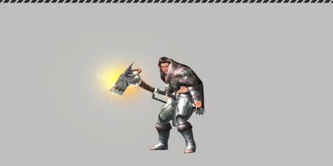

Home › Progression
Organizations Live
Do missions and support requests for organizations to raise Trust, earn T-Stones, Warp Gems and titles, modify equipment with Tech Support, and run personal research
Some sections on this page are not ready yet
Durango has several organizations that stay in touch with pioneers by radio. Working for an organization raises your Trust (friendship) with it. When your Trust levels up you get T-Stones, Warp Gems, titles and access to higher support-request tiers.
What you can do
- Take missions at a camp Communication Center. Finishing one gives T-Stones, EXP and Trust (the first mission of the day also gives Warp Gems)
- Use Request Support to pay T-Stones for materials or tools, and gain Trust too
- Modify equipment, then use Tech Support to re-roll the modification
- Run personal research in your own labs for a 30-minute buff
All organizations Live
| Organization | Missions / support requests |
|---|---|
| Chlorophyll Forum | Yes |
| Frontier Coalition | Yes |
| The Company | Yes |
| The Committee | Yes |
| Radio University | Not yet |
| The Lifeline | Not yet |
| Personal Radio Signal | Not yet |
All organizations appear on the organization page. The Career Guide button on the skill page also depends on this list.
Trust levels Live
These apply to the 4 main organizations. The maximum is Lv.11. The level-up T-Stones and Warp Gems are paid for Trust gained from missions and from support requests alike (jumping several levels at once pays every level).
| Level | Points | T Stone on reaching | Warp Gems on reaching | Title |
|---|---|---|---|---|
| 1 | 0 | – | – | – |
| 2 | 50 | 500 | 5 | ✓ |
| 3 | 130 | 1,000 | 5 | |
| 4 | 520 | 1,500 | 10 | |
| 5 | 1,150 | 2,000 | 10 | ✓ |
| 6 | 2,850 | 2,500 | 15 | |
| 7 | 5,600 | 3,000 | 15 | |
| 8 | 11,830 | 3,500 | 20 | ✓ |
| 9 | 21,910 | 4,000 | 20 | |
| 10 | 45,210 | 4,500 | 25 | |
| 11 | 70,810 | 5,000 | 25 | ✓ |
Going from Lv.1 to Lv.11 gives 27,500 T-Stones and 150 Warp Gems per organization. See Titles for the title names.
Missions Live
Where: the Communication Center in a camp. For delivery missions, bring the items to the camp's Storage.
- There are 84 missions — 44 regular missions (11 per organization) plus 40 high-level island missions that are only offered on Tundra/Snowfield/Tropical/Swamp islands of island level 40+ · new characters at the safehouse also get 6 separate lesson missions
- You can hold 1 mission per organization (4 at most)
- Goals vary: deliver, craft, build, hunt, gather, explore and tame. Some missions have several goals
- Harder missions need a higher character level or Trust level
- Daily reward cap: each character gets rewards for 20 missions per day (all organizations together), reset at 05:00 Thai time. After that you can still finish missions, but you get no T-Stones, EXP, Trust or first-mission bonus (the System chat tells you). They still count for the weekly Pioneer Mission tasks
| Reward per mission | Range |
|---|---|
| Trust | 8–90 |
| T-Stones | 200–5,450 |
| EXP | 30–790 × the Index multiplier of the island you stand on when you finish |
| Island Index | 1 | 2 | 3 | 4 | 5 | 6 | 7 | 8 | 9 | 10 |
|---|---|---|---|---|---|---|---|---|---|---|
| EXP multiplier | ×1 | ×2.2 | ×4.5 | ×6.3 | ×9.1 | ×11.4 | ×14.4 | ×17.6 | ×21.1 | ×24.7 |
First-mission bonus: the first mission you finish gives an extra 5 Warp Gems + 100 EXP + 5 Trust to that organization (there is no bonus T-Stone payment any more). It becomes available again 22 hours after you claim it.
Cancel: allowed any time with no point loss, but you then wait for a new mission based on your character level.
| Character level | Wait for a new mission (after finishing or cancelling) |
|---|---|
| 1–19 | 30 seconds |
| 20–24 | 7 minutes |
| 25–29 | 15 minutes |
| 30 and up | 30 minutes |
Accept Another Mission: re-roll a mission you have not accepted yet. You have 3 charges and get 1 back every 30 minutes.
| T-Stone button | Price | Usable when |
|---|---|---|
| Receive the next mission right away (skip the wait) | 500 T-Stones | You are waiting for a new mission |
| Mission Count Refresh (refill Accept Another Mission charges) | 300 T-Stones | Your charges are not full |
The confirm window in the game does not show a T-Stone price; the real price appears in the System chat before you confirm. Not enough T-Stones = it fails and nothing changes.
Special mission rules
- Recovery test (resting): sit at a campfire or tent for a full 2 minutes, then stand up, log out or warp = 1 count. Standing up early or dying while sitting = no count
- Claim land: not offered to characters who already own land of their own (clan land does not count)
- Hot meals / Pioneer feast: roast any kind of meat (meat-head hammers don't count). Sturdy house / Master builder: a tent counts too
- Explore a dangerous island / Explorer: if you accept while already standing on an Unstable Island, the "travel to the island" goal counts right away
- Animals to hunt: accept one of The Company's hunting or butchering missions (Clear the area · Supplies for the camp · Animal hides · Bones for tools) while on the safehouse and 3 Compsognathus appear around you. This happens once per character, and killed ones do not respawn
Mission names are server text and show in Thai in the game; the names above are translations.
Safehouse lesson missions Live
A new character who reaches the safehouse is given 6 lesson missions at the safehouse Communication Center, one at a time in order (in The Company's slot). The on-screen guide points the way for every one.
| # | Mission | What to do |
|---|---|---|
| 1 | Hunt Compsognathus | Go to the target area west of the camp · hunt 2 Compsognathus · get 1 piece of meat |
| 2 | Hunt Timid Raptors | Go to the target area east of the camp · hunt 2 Timid Raptors · get 1 bone, then hand 1 in |
| 3 | Campfire skewers | Craft 2 food items (cook at the camp's central fire) and hand 1 in |
| 4 | Stones for the company | Gather 3 stones and hand in 3 |
| 5 | Leaf outfit | Make 2 Leaf Outfits and hand in 1 |
| 6 | Balloon fuel | Gather 5 flammable items and hand in 5 |
- Every one pays 60 T-Stones + 46 EXP (#2 also gives 1 Branch + 2 Meat · #3 also gives 1 Stone Pickaxe) · no Trust · they don't count toward the daily reward cap and don't use the first-mission-of-the-day bonus · a mission-reward popup shows when you finish
- If you hunt for a long time on #1–#2 without progress, a Finish now button appears after about 4 minutes
- Once all 6 are done the guided quest line goes on to K's quests · handing items in for #2–#5 does not count as the shortcut to the balloon
- Characters who are already past the safehouse (for example they have spoken to K, or already own a private island) don't have to do them and don't see them
High-level island missions Live
A new set of 40 missions from the DurangoFAQ community Mission List. They are only offered while you are on a Tundra, Snowfield, Tropical or Swamp island of island level 40 or higher (other islands keep offering the usual 44 missions).
- You need the character level in the table (35–45) and Trust Lv.3 (130 points) or higher with that organization
- On a matching island these missions come up more often than low-level ones
- "Hunt … and bring …" missions have 2 goals: hunt that animal (every variant with the same name counts, e.g. White Direwolf), then deliver the part — a part from any animal works, because items in your bag don't remember which animal they came from
- Happy New Year counts when you capture a Male Megaloceros and get its reins (not when you domesticate it in a cage)
- No Hesitation: Coelophysis doesn't drop a skull when butchered — a skull from any other animal works
- Rewards follow the same rules as other missions (20 per day cap · first-mission bonus · EXP × island Index multiplier)
- Mission names and texts in game are in Thai
| Island | Organization | Mission | Goal | Character level | T-Stone | EXP | Trust |
|---|---|---|---|---|---|---|---|
| Tundra | The Company | Feeding the Hungry | deliver Meat Dumpling ×6 | 40 | 4,850 | 680 | 80 |
| Tundra | The Company | Pot Luck | deliver Pot ×2 | 40 | 4,850 | 680 | 80 |
| Tundra | The Company | A fire in need | deliver Charcoal ×10 | 40 | 4,850 | 680 | 80 |
| Tundra | The Company | Hanging by the Strong Thread | deliver Strong Thread ×6 | 40 | 4,850 | 680 | 80 |
| Tundra | Chlorophyll Forum | Sap it to me | deliver Sap ×3 | 45 | 4,200 | 610 | 76 |
| Tundra + Snowfield | Chlorophyll Forum | The Cranberries are back | deliver Cranberry ×3 | 45 | 4,200 | 610 | 76 |
| Tundra | Chlorophyll Forum | Blowing Cotton | deliver Cotton ×3 | 45 | 4,200 | 610 | 76 |
| Tundra | Chlorophyll Forum | Fungus Research | deliver Mushroom ×3 | 45 | 4,200 | 610 | 76 |
| Tundra | Chlorophyll Forum | Graduating Alum | deliver Alum ×3 | 45 | 4,200 | 610 | 76 |
| Tundra | Frontier Coalition | Modern Parthenon | deliver Stone Pillar ×6 | 40 | 4,200 | 590 | 78 |
| Tundra | Frontier Coalition | Lucky Leather | deliver Leather Strap ×6 | 40 | 4,200 | 590 | 78 |
| Tundra | Frontier Coalition | Nailing up the Foundation | deliver Nail ×10 | 40 | 4,200 | 590 | 78 |
| Tundra + Swamp | Frontier Coalition | Reaching the Ceilling | deliver Roof Material ×5 | 40 | 4,200 | 590 | 78 |
| Tundra | Frontier Coalition | Cold and Savage | deliver Building Repair Kit ×4 | 40 | 4,200 | 590 | 78 |
| Tundra | The Committee | Overcomplications | hunt 1 Direwolf Cub, then deliver Meat ×1 | 45 | 5,450 | 790 | 90 |
| Tundra | The Committee | No Hesitation | hunt 1 Coelophysis, then deliver Skull ×1 | 45 | 5,450 | 790 | 90 |
| Tundra | The Committee | Stuck Up | hunt 1 Male Megaloceros, then deliver Horn ×1 | 45 | 5,450 | 790 | 90 |
| Tundra | The Committee | The Centrosaurus of Theseus | hunt 1 Centrosaurus, then deliver Herbivore Leg Bone ×1 | 45 | 5,450 | 790 | 90 |
| Tundra | The Committee | The Danger of Vanity | hunt 1 Ornithomimus, then deliver Feather ×1 | 45 | 5,450 | 790 | 90 |
| Snowfield | The Company | Oily Obligation | deliver Oily Liquid ×3 | 40 | 4,850 | 680 | 80 |
| Snowfield | The Committee | Lucky Wolf's Leg | hunt 1 Direwolf, then deliver Carnivore Leg Bone ×1 | 45 | 5,450 | 790 | 90 |
| Snowfield | Frontier Coalition | From the Floor to the Grave | deliver Floor Material ×5 | 40 | 4,200 | 590 | 78 |
| Snowfield | Frontier Coalition | Baby It's cold outside | deliver Wall Material ×4 | 35 | 3,700 | 520 | 69 |
| Snowfield | The Committee | Apex Predator | hunt 1 Sabertooth, then deliver Meat ×1 | 45 | 5,450 | 790 | 90 |
| Snowfield | The Committee | Happy New Year | capture 1 Male Megaloceros (get its reins) | 45 | 5,450 | 790 | 90 |
| Snowfield | The Committee | A Mammoth Lesson | hunt 1 Mammoth, then deliver Fat ×1 | 45 | 5,450 | 790 | 90 |
| Tropical | The Company | Opportunity Cost | deliver Clam ×5 | 45 | 5,450 | 760 | 89 |
| Tropical | The Company | Coconut Rut | deliver Coconut ×4 | 45 | 5,450 | 760 | 89 |
| Tropical | Chlorophyll Forum | Getting Involved | hunt 1 Deinonychus, then deliver Carnivore Leg Bone ×1 | 45 | 4,200 | 610 | 76 |
| Tropical | Chlorophyll Forum | Community Service | deliver Plastic Bag ×2 | 45 | 4,200 | 610 | 76 |
| Tropical | Frontier Coalition | It all Hinges on this | deliver Hinge ×8 | 40 | 4,200 | 590 | 78 |
| Tropical | Frontier Coalition | Tool for Fixing Tool | deliver Tool Repair Kit ×4 | 40 | 4,200 | 590 | 78 |
| Tropical | The Committee | It's Crab all the way Down | deliver Coconut Crab ×3 | 40 | 4,850 | 700 | 81 |
| Tropical | The Committee | Maintaining Altitude | hunt 1 Light Pink Protoceratops, then deliver Herbivore Leg Bone ×1 | 40 | 4,850 | 700 | 81 |
| Swamp | The Company | Drink from a Mangrove | deliver Water ×5 | 40 | 4,850 | 680 | 80 |
| Swamp | Chlorophyll Forum | I offer this Ring Vine | deliver Thick Vine ×3 | 45 | 4,200 | 610 | 76 |
| Swamp | Chlorophyll Forum | A New Plague | hunt 1 Giant Rat, then deliver Meat ×1 | 45 | 4,200 | 610 | 76 |
| Swamp | Frontier Coalition | Strapped for Strap | deliver Long Strap ×8 | 40 | 4,200 | 590 | 78 |
| Swamp | The Committee | An Interesting Hobby | hunt 1 Skunkodus, then deliver Pelt Piece ×1 | 45 | 5,450 | 790 | 90 |
| Swamp | The Committee | A New Way of Trading | deliver Liquid Rubber ×3 | 45 | 5,450 | 790 | 90 |
Request Support Live
Pay T-Stones to request goods from an organization. You get the items right away, plus 1 random extra item, plus Trust.
- There are 10 tiers. The tiers you can use match your Trust level with that organization (tier 1 works from 0 points)
- Each organization has 3 requests per tier. Across all organizations there are 53 kinds of request
- Item level = your character level rounded down to a multiple of 5 (minimum 1), e.g. a Lv23 character gets Lv20 items. Items with a limited level range are kept inside that range. The request list shows the same level you actually get
- If a request levels up your Trust, you get the T-Stones and Warp Gems from the table above, the same as for missions
| Tier | Cost (T-Stones) | Trust | Example goods |
|---|---|---|---|
| 1 | 200 | +5 | Basic food ingredients |
| 2 | 300 | +8 | Animal hides |
| 3 | 450 | +11 | Basic crafting parts |
| 4 | 680 | +14 | Dried leather |
| 5 | 1,010 | +17 | Stone/bone gathering tools |
| 6 | 1,520 | +20 | Skilled crafting parts |
| 7 | 2,280 | +23 | Metal consumables |
| 8 | 3,420 | +26 | Spices |
| 9 | 5,130 | +29 | Metal gathering tools |
| 10 | 7,690 | +32 | Advanced metal consumables |
- Each request can be used 3 times per week. The count resets every Tuesday at 22:00 Thai time (UTC+7)
- After a request, that organization rests for 30 minutes before the next one
Equipment modification and Tech Support Live
Modification adds special stats to equipment (shoes, weapons, bags, gloves, hats, tools, clothes). Each item has 1 slot.
First modification: craft a modification recipe at a workbench, using the item as an ingredient. The stats are rolled into the slot right away. There are 22 modification recipes. Some come from Tailoring and Weapon/Tool skills (Skills). Some recipes also add a penalty, such as lower max energy.
- You must have learned the recipe. A tier-2 recipe also needs the recipe before it. The slot must be empty (a tier-2 recipe does not upgrade over tier 1)
- Crafting EXP and quest progress count as soon as the progress bar starts, so logging out mid-bar loses nothing
- If the materials are missing or don't fit, you get your energy back
Tech Support: use it at a Personal Communication Center or a camp Communication Center to re-roll the slot.
- Request an estimate. You see the result before you commit. You can lock stats you want to keep (at least 1 stat must stay unlocked)
- Apply. Pay the recipe's materials again plus energy, and you get exactly what the estimate showed. The item then becomes untradable (see the box below)
- Reset the slot if you want to start over. It costs 50 Warp Gems
| Estimate | Value |
|---|---|
| First estimate | 2,000 T-Stones |
| Each following estimate | ×1.1 per estimate, up to 13,454 (from the 21st on) |
| Locking | Price × (1 + number of locked stats) |
| Estimate lifetime | 30 minutes |
| Estimate count used for the price | Keeps counting for the life of the slot — applying or resetting the slot does not start it over |
| Rarity of a rolled stat | Chance |
|---|---|
| Normal | 85% |
| Rare ★★ | 13% |
| Super Rare ★★★ | 2% |

Personal research Live
Build a Life Lab, Light Tech Lab or Medium Tech Lab, then pay T-Stones to research. You get a buff right away that lasts 30 minutes. For example, butchering research raises your butchering ability.
| Research tier | Cost (T-Stones) |
|---|---|
| 1 | 2,000 |
| 2 | 5,000 |
| 3 | 10,000 |
| 4 | 20,000 |
- There are 80 research options
- Each lab type holds 1 buff at a time. Starting a new research replaces the old one
- The lab's number sets the highest research tier it can run
Not finished yet Not ready
- Radio University, The Lifeline and Personal Radio Signal have no missions or requests yet, so you cannot raise Trust with them
- Personal research is not tied to your real pioneer grade yet. Tiers 3–4 cannot be unlocked for now
- The Trust level-up message shows the organization's name twice